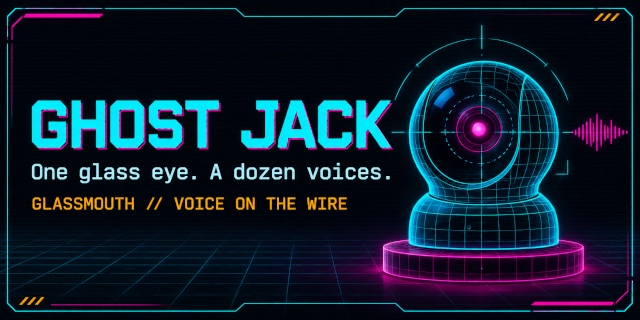

Drawing Hands, a Pi That Said No, and a $2 Camera Named Ghost Jack

On Sunday I taught an agent to draw hands from a photo, let a phone video explain why a Pi kept rolling back, and turned a thrift-store camera into Ghost Jack, which now watches the Pi's screen. Game-Maker: Sandbox Edition site 3.3.0 is out.
The full write-up is on my blog.